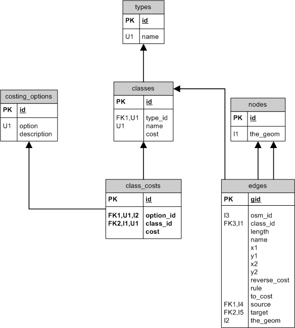

Network Layer
TOTUS uses an altered version of pgRouting's topological network schema, as imported by the thirdparty tool osm2pgrouting. We maintain our own copy.

The OSM simple schema data is not suitable for network routing. By nature it is topological, but not necessary planar and cannot be traversed as a directed graph. We use the thirdparty tool osm2pgrouting to create the correct planar network topology from an OSM planet file. This utility has been slightly modified to work with our ant driven database build and deployment. osm2pgrouting depends on a configuration file to load only the network classes TOTUS is interested in for routing purposes. This configuration file may need updating as new network classes are added to the New Zealand OSM planet file. The network schema is created from the same OSM planet XML file as imported into the OSM schema.
osm2pgrouting imports the network data to the above database schema. This schema is created by TOTUS, but is a given and does not follow our naming conventions. The table nodes use to be called edge_points, but to keep it consistent with edges/nodes in a graph it has been renamed.
Types and Classes
These classify the network edges into network types, eg. highway, each with their own classes, eg. motorway. This information is used by the routing functions to consider only sub-networks, eg. only highway classes when calculating routes and to apply rudimentary costing to the traversal of an edge.
types:
These are the top level map feature types in the OSM data. We only import cycleway, highway, junction and tracktype.
- id (INTEGER): type id allocated by mapconfig.xml
- name (VARCHAR(200)): map feature type name, in OSM these are the key names for way attributes, eg. highway
classes:
These are the individual classes for the network types and used to scale the cost of traversing the network edges belong to this class.
- id (INTEGER): class id allocated by mapconfig.xml
- type_id (INTEGER): it's parent map feature type
- name (VARCHAR(200)): the name of the class, in OSM these are the values for the map feature keys, eg.
<tag k="highway" v="traffic_signals"/> - cost (NUMERIC): the default scaling factor to apply to the edge cost, which is the length of the edge in the graph
Road class costing
TOTUS applies rudimentary costing per road class. The calling route function needs to specify the route costing options to apply per road class to prvent certain road types not allowed by the mode of transport to be considered as a candidate edge, eg. cycling not allowed on motorway and the motorway road class is costed as 100000.0
costing_options:
- id (SERIAL): cost option id allocated by database
- option (VARCHAR(200)): cost option, eg. distance, pedestrian, etc.
- description (TEXT): description of the cost
class_costs:
- id (SERIAL): class cost id allocated by database
- option_id (INTEGER): the costing option for this road class cost
- class_id (INTEGER): the road class the cost will be applied for
- cost (NUMERIC): the cost for the road class, which is a scaling factor for the edges in the graph
Topology
nodes:
- id (INTEGER): node identifier
- the_geom (POINT): 2D point geometry for vertex
edges:
- gid (SERIAL): surrogate key allocated by loader
- osm_id (BIGINT): link to the OSM way this network edge was created from, multiple edges may link to one single OSM way
- class_id (INTEGER): it's network class
- length (NUMERIC): great-circle distance in degrees
- name (CHARACTER(200)): name of the way
- x1 (NUMERIC): start longitude of edge, used for optimizing A-star by filtering unwanted edges from graph
- y1 (NUMERIC): start latitude, used by A-star routing function
- x2 (NUMERIC): end longitude
- y2 (NUMERIC): end latitude
- reverse_cost (NUMERIC): the cost of traversing the edge in reverse, for one way this value is huge and prohibits traversal
- rule (TEXT): comma separated list of edges to follow after this one, implements a obligated turn restriction rule
- to_cost (NUMERIC): the cost of traversing the edge from start to end node
- source (INTEGER): the source (start) node of edge
- target (INTEGER): the target (end) node of edge
- the_geom (MULTILINESTRING): postGIS gemetry
{kind=link}